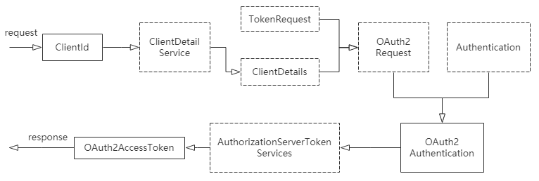
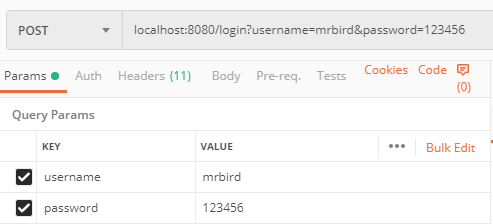
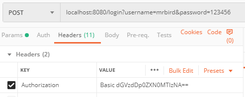
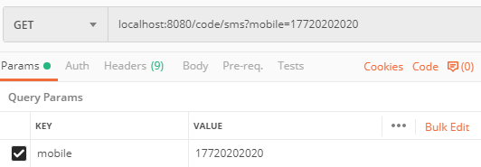
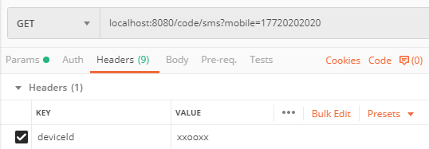
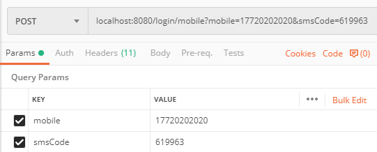
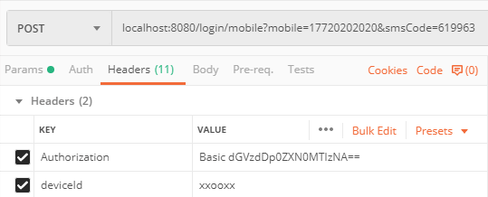

在上一节Spring Security OAuth2入门中，我们使用了Spring Security OAuth2封装的授权码和密码模式成功获取了令牌，这节记录下如何通过自定义的用户名密码和手机短信验证码的方式来获取令牌。
自定义用户名密码方式获取令牌
在上一节的基础上，我们先在资源服务器上加入一些基本的Spring Security配置:
1 |
|
MyAuthenticationFailureHandler失败处理器的逻辑很简单，就是认证失败放回相应提示：
1 |
|
问题的关键是，如何在登录成功处理器里返回令牌。在研究Spring Security OAuth2自带的令牌获取方式后，会发现令牌的产生可以归纳为以下几个步骤：

我们可以参考这个流程，来实现在登录成功处理器MyAuthenticationSucessHandler里生成令牌并返回：
1 |
|
启动项目，使用postman发送登录请求localhost:8080/login：


点击发送后便可以成功获取到令牌：
1 | { |
使用这个令牌便可以成功访问/index接口，这里就不演示了。

短信验证码获取令牌
在Spring Security短信验证码登录一节中，我们实现了通过短信验证码登录系统的功能，通过短信验证码获取令牌和它唯一的区别就是验证码的存储策略。之前的例子验证码存储在Session中，现在使用令牌的方式和系统交互后Session已经不适用了，我们可以使用第三方存储来保存我们的验证码（无论是短信验证码还是图形验证码都是一个道理），比如Redis等。
引入Redis依赖：
1 | <dependency> |
定义一个RedisCodeService，用于验证码的增删改：
1 | /** |
然后将Spring Security短信验证码登录一节中的实现都挪到现在的Demo里，修改相应的地方（涉及到验证码的增删改的地方，具体可以参考下面的源码，这里就不赘述了）。
启动系统，使用postman发送验证码：

请求头中带上deviceId（这里为随便填写的模拟值）：

点击发送后，控制台输出：
1 | 手机号17720202020的登录验证码为：619963，有效时间为120秒 |
接着用这个验证码去换取令牌，使用postman发送如下请求：

同样请求头中要带上deviceId和经过base64加密的client_id:client_secret：

点击发送后，便可以成功获取到令牌：
1 | { |
源码链接：https://github.com/wuyouzhuguli/SpringAll/tree/master/64.Spring-Security-OAuth2-Customize